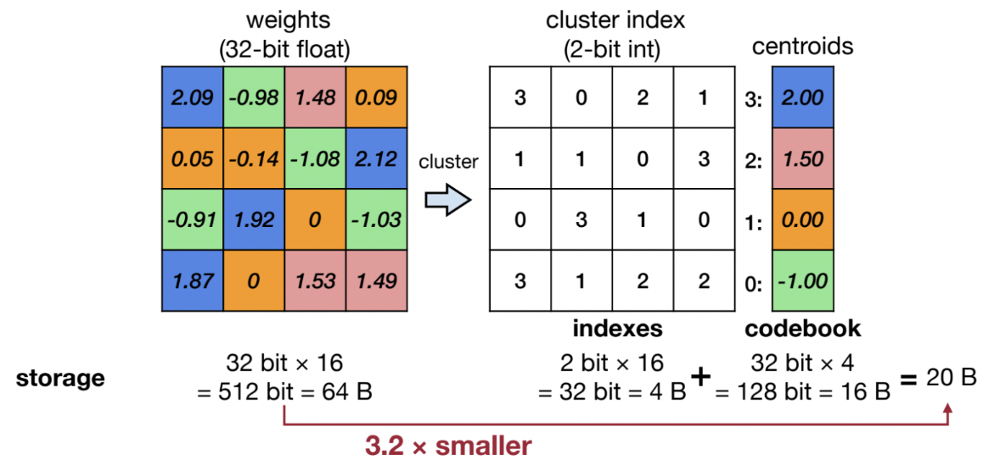
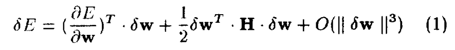
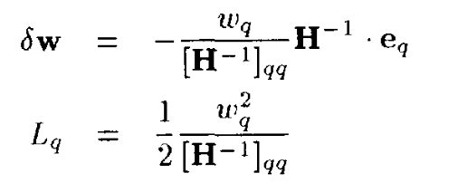
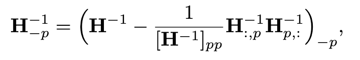
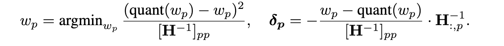
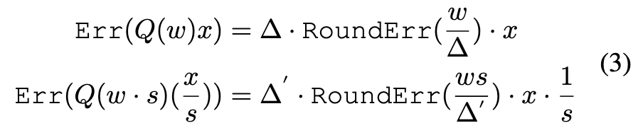
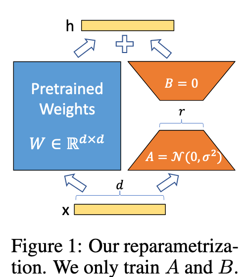
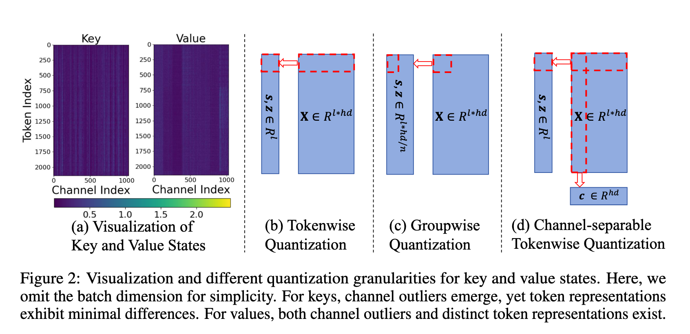
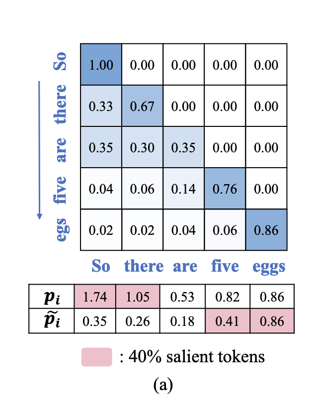

量化学习笔记：从 GPTQ 到 ZIPCache
约 3988 个字 46 行代码 10 张图片 预计阅读时间 14 分钟
写在 2025 年 2 月，第一次整理量化相关的技术内容，参考了一些经典的论文和 MIT 6.5940 课程内容。里面的想法仅基于当时粗浅的理解，现在回头看也有一些不够深入和准确的地方，后续会继续完善。
—— Xi Lin, 2025.12
这篇笔记将从量化的概念开始，到介绍 GPTQ、AWQ、QLoRA、QLLM 和 ZIPCache 等量化技术，呈现 Overview of Quantization。
什么是量化？
此处参考了 MIT 6.5940 的课程内容。
基本概念
量化 (Quantization) 的核心想法是通过降低数值存储和计算的精度来降低访存 (Memory Access) 和计算 (Computation) 的开销。
我认为量化目前 work 的核心在于一个基本假设：Parameters are not fully trained. 基于这个假设，才能够推出目前的精度表示是存在浪费的，从而量化能够 improve efficiency while maintaining the performance。这和 Scaling Laws for Precision (Kumar, 2024) 的想法是一致的，即当数据量到达一定程度，参数被充分训练后，低精度量化会带来显著的性能下降。
数据类型
这部分介绍一些基本的量化数据类型，需要查阅的时候可以参考。
- FP64: 深度学习要什么 FP64.jpg
- FP32: float, 1+8+23
- FP16: half, 1+5+10
- BP16: 1+8+7, 深度学习要什么精度.jpg
- FP8: 分为 E4M3 和 E5M2 两种，分别是 1+4+3 和 1+5+2
- FP4: 1+2+1, Blackwell Architecture 添加了原生支持（对其实用性深表怀疑）
- NF4: QLoRA 提出，数值的分布是正态分布而非均匀分布，详见 QLoRA 阅读笔记部分
- INT8, INT4: 1+7/3, 整数表示
基本方法
K-Means-based Quantization
核心思路：Weight -> K-mean clusters -> index + codebook = QWeight

低精度存储 index，高精度存储 codebook
但现在这种方法不是主流：
- K-means 难以处理 outlier 的问题
- 需要高精度存储 codebook，compress rate 不高
- 只减小了访存量，计算时引入额外的 dequant overhead，计算性能并没有提升
Linear Quantization
目前的主流方法。
核心思路：\(\text{weight} = (\text{qweight} - \text{zero}) \times \text{scale}\)
量化参数的计算
由此推导出 \(S, Z\) 的计算公式：
这个思路支持多种量化方案：
- Weight Only Quantization: 和 K-Means-based 类似，引入额外 overhead from dequantization，适用于 memory bound 的 decoding 阶段。
- Weight and Activation Quantization: 可以充分利用硬件特性编写 customized kernel 直接进行低精度运算得到结果，既减小访存开销也减小计算开销。
QAT 与 PTQ
目前主流在 LLM 中的量化应用主要分两种：QAT (Quantization-Aware Training) 和 PTQ (Post-Training Quantization)。
QAT
在训练阶段就采用量化，将量化后权重的 rounding error 在训练阶段就纳入考虑，从而减少量化带来的 performance degradation。

PTQ
通过量化训练好的权重来提升模型推理性能，因为不需要重新训练模型而成本较低，广泛使用。
下面介绍一些量化的粒度（即将若干权重进行 grouping，计算量化参数）。粒度越小量化损失越低，但存储量化参数的开销越大。
- Per-Tensor Quantization
- Per-Channel Quantization
- Group Quantization
- Multi-level Quantization: \(r = (q-z) \cdot s_0 \cdot s_1 \cdots\). level 越低，粒度越低，量化参数精度越低。是 Low Compression Rate 和 High Flexibility 的折中。
GPTQ: 从 Pruning 到 Quantization
OBS、OBC、OBQ：GPTQ 的前世今生
Quote
- B. Hassibi, D. G. Stork, and G. J. Wolff, “Optimal Brain Surgeon and general network pruning,” in IEEE International Conference on Neural Networks, Mar. 1993, pp. 293–299 vol.1. doi: 10.1109/ICNN.1993.298572.
- E. Frantar, S. P. Singh, and D. Alistarh, “Optimal Brain Compression: A Framework for Accurate Post-Training Quantization and Pruning,” 2022, arXiv. doi: 10.48550/ARXIV.2208.11580.
OBS
OBS 本来是用于 pruning 的，核心想法是：将某个 weight 的值设置为 0，同时调整其他位置的权重，使总体上对 loss 的影响最小。
对 loss function 的微分进行泰勒展开，充分训练下没有一阶导项，忽略高阶微分项，最终得到 delta loss function 的表达式。

然后在 pruning 约束条件下对目标函数进行拉格朗日乘数法求解，最终得到两个关键表达式。

- 对其他权重的变化量 \(\delta_{\mathbf{W}}\)（最后两个因子可以简化为 \(H^{-1}\) 的第 q 列）
- 优化 q 对整个 loss 引起的变化 \(L_q\) ，这个可以用来找到最佳的 q
OBC & OBQ
OBC 在 OBS 的基础上假设 Hessian 矩阵的每一行相对独立（基于参数独立假设），并提出了对 Hessian 的迭代更新算法，避免频繁对 Hessian 矩阵求逆。

而 OBQ 将 pruning 视为一种特殊的 quantization，从而将 OBC 改造为 quantization 算法。 
整个量化过程是：
- 针对每一行，找到对 loss 影响最小的权重，对其进行量化
- 计算 \(\delta_p\)，更新其他权重
- 更新 Hessian 矩阵
- 重复 1-3 步，直至完成该行的更新
- 每一行的更新是独立的，可以并行
在量化时还有一个 trick，对于量化中的 outliers，他们在量化前后会造成较大的 error，在贪心算法中会让他们最后才被 quantized， 而这样最后还未量化的权重数量很少，难以通过调整其他权重减小 loss。因此需要让 outliers 尽早被 quantize。
GPTQ 的核心想法
Quote
- E. Frantar, S. Ashkboos, T. Hoefler, and D. Alistarh, “GPTQ: Accurate Post-Training Quantization for Generative Pre-trained Transformers,” Mar. 22, 2023, arXiv: arXiv:2210.17323. doi: 10.48550/arXiv.2210.17323.
在 OBQ 的基础上改进，主要有以下三点：
- 将基于 delta loss 的贪心算法改成顺序的算法，因为顺序在大模型下基本不影响量化效果。这样就可以以同样的顺序量化每一行
-
Lazy Batch Update：OBQ 中每 quantize 一个参数就要更新所有的参数， 而在 GPTQ 中，他将 columns 分成若干组 block，分成 local update 和 global update。
local update 是在 block 内部，将前面量化参数的影响更新到 block 内的后续参数中；
global update 则是在一个 block 更新完后，利用矩阵运算对后续所有参数进行批量更新。
这样 local update 的计算量较小，而计算量较大的 global update 又可以通过 batched update 的方式充分利用计算资源。
-
利用 Cholesky 分解预计算 \(H^{-1}\) 。由于量化的顺序已经确定，所以可以直接预计算 \(H^{-1}\) 。这个预计算的过程和 Cholesky 分解等价。
所以最核心的 idea 就是第一条的 insight，即 order does not matter。 量化顺序的 in order 带来了 update in batch，带来了 precompute \(H^{-1}\) 。
GPTQ 代码实现
核心代码
damp = percdamp * torch.mean(torch.diag(H))
diag = torch.arange(self.columns, device=self.dev)
H[diag, diag] += damp
H = torch.linalg.cholesky(H)
H = torch.cholesky_inverse(H)
H = torch.linalg.cholesky(H, upper=True)
Hinv = H
for i1 in range(0, self.columns, blocksize):
i2 = min(i1 + blocksize, self.columns)
count = i2 - i1
W1 = W[:, i1:i2].clone()
Q1 = torch.zeros_like(W1)
Err1 = torch.zeros_like(W1)
Losses1 = torch.zeros_like(W1)
Hinv1 = Hinv[i1:i2, i1:i2]
for i in range(count):
w = W1[:, i]
d = Hinv1[i, i]
if groupsize != -1:
if not static_groups:
if (i1 + i) % groupsize == 0:
self.quantizer.find_params(W[:, (i1 + i):(i1 + i + groupsize)], weight=True)
else:
idx = i1 + i
if actorder:
idx = perm[idx]
self.quantizer = groups[idx // groupsize]
q = quantize(
w.unsqueeze(1), self.quantizer.scale, self.quantizer.zero, self.quantizer.maxq
).flatten()
Q1[:, i] = q
Losses1[:, i] = (w - q) ** 2 / d ** 2
err1 = (w - q) / d
W1[:, i:] -= err1.unsqueeze(1).matmul(Hinv1[i, i:].unsqueeze(0))
Err1[:, i] = err1
Q[:, i1:i2] = Q1
Losses[:, i1:i2] = Losses1 / 2
W[:, i2:] -= Err1.matmul(Hinv[i1:i2, i2:])
相比于 OBQ 的代码，不需要再进行 Hessian 矩阵的更新，而是直接使用 Cholesky 分解对 Hessian 进行预计算。 同时通过两层循环实现了对权重的 local update 和 global update。
对 GPTQ 的一些思考
GPTQ 虽然非常有效，但主要还是基于 Hessian 矩阵的调整，而 Hessian 矩阵是通过 \(H=2X^TX\) 近似得到的，从而不可避免地存在偏差。
GPTQ 最重要的思想还是在 OBS 中提出的通过 Tayler Expansion 转换成一个优化问题，通过调整其他参数来使整体 loss 最小的一个思路。这个思路可以用到很多地方，值得注意。
AWQ
Quote
- J. Lin et al., “AWQ: Activation-aware Weight Quantization for On-Device LLM Compression and Acceleration,” Proceedings of Machine Learning and Systems, vol. 6, pp. 87–100, May 2024.
AWQ 的核心想法
AWQ 基于一个 observation: 保留 1% salient weights 不被量化可以显著提升量化后模型的 performance。
接下来问题是如何判断 salience：AWQ 基于 magnitude of activation 来判断 salience，而不是 weights。 这是很合理的。因为我们要判断 weights 的 salience，那么当 magnitude of activation 越大，对应 weight 的微小变化对 output 的影响就越大。
在此基础上，AWQ 想要进一步量化 salient weights：利用 Activation-aware Scaling 来减小 salient weight 量化后的 error。

可以看到，当对 weight 和 input 分别施加相反的 scaling factor，最终的 error 会随着 s 的增大而减小。这便是 AWQ 的核心机制。
需要注意的是，这里有一个核心假设：“Scaling up a single element w usually does not change the maximum value from the group w. Therefore we have ∆′ ≈ ∆” 有了这个假设的存在，才能够保证额外的 scaling 是生效的。否则的话 scaling 越大 ∆′ 也会越来越大，从而导致误差越来越大。
这也是 scaling salient weight only 的原因，因为如果 scaling 所有 weight，这个假设便不再成立，从而使 error 越来越大。
最终实际上 AWQ 对每一个 input channel 都计算一个 scaling factor，scaling factor 基于 magnitude of activation 来决定。
scaling factor vector \(\mathbf{s} = \mathbf{s}_{\mathbf{x}} ^ \alpha\)，通过 grid search 找到最佳 \(\alpha\)
AWQ 代码实现
我跑了一下 AWQ 的 examples，发现 AWQ 实现了 W4A4 的量化，设计了基于 INT4 的 customed CUDA kernel 来进行推理。
所以 AWQ 的量化过程包括以下几个部分：
- 使用论文中提到的方法对权重进行量化
- 将量化后的 INT4 权重 pack 存储到 INT32 中。
- 将模型原有的 Linear 层替换为 QLinear 层，其中调用 customed kernel 进行 INT4 Inference
由此，AWQ 能够在计算和访存上都减少开销。
对 AWQ 的一些思考
AWQ 中有一些思路可以进行学习：
- weight salience 应该考虑 activation 而不是 weight 本身。因为当 magnitude of activation 越大，对应 weight 的微小变化对 output 的影响就越大。
- 这个 scaling 看起来非常 tricky，不知道背后有没有一些更深层次的想法，后续可以留意一下。
QLoRA
Quote
- E. J. Hu et al., “LoRA: Low-Rank Adaptation of Large Language Models,” Oct. 16, 2021, arXiv: arXiv:2106.09685. doi: 10.48550/arXiv.2106.09685.
- T. Dettmers, A. Pagnoni, A. Holtzman, and L. Zettlemoyer, “QLoRA: Efficient Finetuning of Quantized LLMs,” Advances in Neural Information Processing Systems, vol. 36, pp. 10088–10115, Dec. 2023.
LoRA: low-rank fine-tuning
通过在权重上加上一对低秩矩阵乘来对权重进行微调。
核心：\(W' = W + AB\)

当 \(r << d\) 时，finetuning 时需要的参数就大大减小。
QLoRA 的核心想法
QLoRA 的目的是为了通过量化优化 LoRA 过程，但是其中的一些量化思想还是可以学习的。同时 QLoRA/LoRA 现在还是主流的 fine-tune 方法。
关于 QAT/PTQ：QLoRA 虽然是用于微调（训练）环节，但是其量化的是原权重，而在 LoRA 中原权重不需要被更新，因此其中的思路还是偏 PTQ 一些
QLoRA 主要两个核心思路
一是提出 NF4，基于 weights 大多遵循 normal distribution 的 insight，因此权重在每一个量化值的概率分布不是均匀的，自然量化值的分布也不应该是均匀的。 在概率越大的地方量化值分布应该更集中以获得更高的精度，而在概率小的地方量化值分布应该更稀疏。
二是提出双量化（可以看作是一种 2-level quantization），level-1 是用 small group size 对参数进行量化。由于 group size 较小，会产生许多 additional parameters for each group。 然后 level-2 对 group in level 1 再进行一个分组，对 additional parameters 再进行量化。这样既有 small group size 对精度的优势， 又避免了 small group size 带来更多 additional parameters 造成的显存占用问题。
对 QLoRA 的一些思考
- 我觉得 NF4 这个数据类型的思考挺合理的，但是并没有成为主流，是否因为目前硬件并不支持 NF4 的运算呢？如果是这样的话，那为什么 QLoRA 还要坚持使用 NF4 呢？可以做一些实验试试，NF4 在 finetuning 这个场景下有什么特别的作用吗？
- QLoRA 这个 double quantization 可以留意一下。他和 multi-level quantization 不一样。double quantization 是对第一次量化的量化参数再进行量化，而 multi-level quantization 则是在不同 level 采用不同的量化粒度和不同的量化参数精度。 个人认为 multi-level quantization 更合理一些，double quantization 更像只是为了提高压缩率的一个 trick，不过不失为一种在细粒度量化下改善压缩率的方法。
QLLM
Quote
- J. Liu, R. Gong, X. Wei, Z. Dong, J. Cai, and B. Zhuang, “QLLM: Accurate and Efficient Low-Bitwidth Quantization for Large Language Models,” Apr. 06, 2024, arXiv: arXiv:2310.08041. doi: 10.48550/arXiv.2310.08041.
QLLM 的核心想法
核心思想是在不同 channels 之间进行 reassembly
这个 summation 中的每一项为一个 channel 的计算结果，核心思想是保证最终结果 summation 不变的前提下，在不同 channels 之间分配，进行 reassembly，从而减小 outliers 对 quantization 的影响。
Reassembly 主要分为 disassembly 和 assembly 两步。
- Disassembly 将一个 channel 拆分成多个 sub-channels，从而将权重值限定在 threshold 之内
-
Assembly 将多个相似 channels 的权重进行加总合并，从而实现对 channels 的合并
这个有一个问题就是在对权重进行 reassembly 的同时，也需要对输入 \(\mathbf{x}\) 进行 reassembly，这会引来一定的开销，并且是 memory-access intensive 的。
-
Disassembly 需要对 \(\mathbf{x}\) 的对应 channels 进行拆分（实现上是 scaling + repeating）
- Assembly 需要对 \(\mathbf{x}\) 对应的 channels 求均值
对 QLLM 的一些思考
- 在不同 channels 之间进行权重的重新分配从而缓解 outlier 的问题，我觉得这个想法是非常好的。从 \(\mathbf{y} = \sum \mathbf{x}_i \mathbf{W}_{i, :}\) 出发，保持 summation 不变的情况下在不同 terms 之间进行分配，这个思路非常有意义。
- 但是这样引入的额外计算我觉得有点不够优雅，能否有一个能够在不同 channels 之间分配，而又能够更好地减少 overhead 的方法呢？
ZipCache
Quote
- Y. He, L. Zhang, W. Wu, J. Liu, H. Zhou, and B. Zhuang, “ZipCache: Accurate and Efficient KV Cache Quantization with Salient Token Identification,” May 23, 2024, arXiv: arXiv:2405.14256. doi: 10.48550/arXiv.2405.14256.
ZipCache 的核心想法
第一个是在 KV Cache 压缩时通常从 token-wise 压缩，然而 outlier 的分布是在 channel 维度上的，这样就会使每一个 token 的压缩都会受到 outlier 的严重影响。
为此，ZipCache 提出在 channel-wise 上做一个 normalization，使 channels 之间的 magnitude 在同一 level，从而显著减小 outlier 的影响。

第二个是在 KV Cache Compression 中判断 salient tokens 时，主流工作用的都是 accumulated attention score 作为 metrics，但这个标准会存在问题，没有考虑到每个 accumulated score 的 summation terms 数量不同，同时会受到 softmax 的归一化影响，所以是不合理的
为此，ZipCache 提出 normalized attention score，即在非零元素之间求 mean

同时还指出在计算 Salience 的时候需要计算整个 attention score matrix，这与 flash attention 不兼容。为此 ZipCache 提出对 tokens 进行 samples，以部分 tokens 对整个序列其他 tokens 的 attention scores 来进行近似。
对 ZipCache 的一些思考
- ZipCache 和上面一些工作的不同之处是，ZipCache 专注于对 KV Cache 的量化，而上面的工作都是专注于对 Linear weight 的量化。从这里可以看到 KV Cache Compression 具有自己的特点，可以带来一些和 weight quantization 不一样的思路和创新点。
- 个人很喜欢 ZipCache 提出的两个想法，这两个 idea 都是基于前人工作的基础上，基于 KV Cache Compression 的某些特点去进行改进。整个思路我觉得非常清晰且自然。
- 在兼容 Flash Attention 时提出的 sampling 的思路我觉得也具有一定的普适性，虽然在理论上缺少一定的支撑，但是在工程上具有一定的实践意义，后续可以留意一下。
下一步工作
- 本文基本介绍的都是 PTQ 相关技术，可以进一步研究 QAT。
- 本文只选取了一些在各个应用的代表性工作，后续可以在某一个方向上做更详细的调研
- 本文很大篇幅都在介绍 weight quantization，对 KV cache compression 介绍较少，可以进一步进行专题研究。